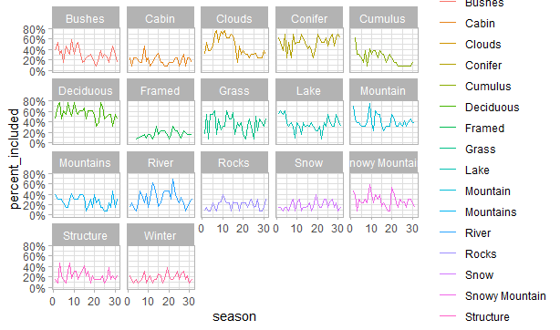
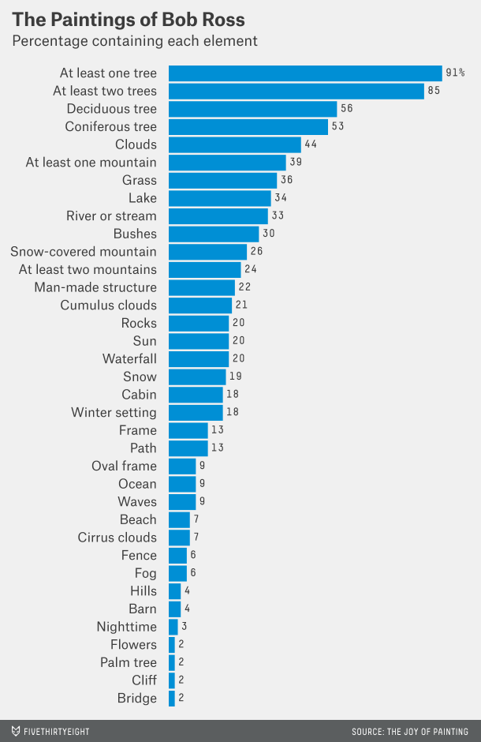
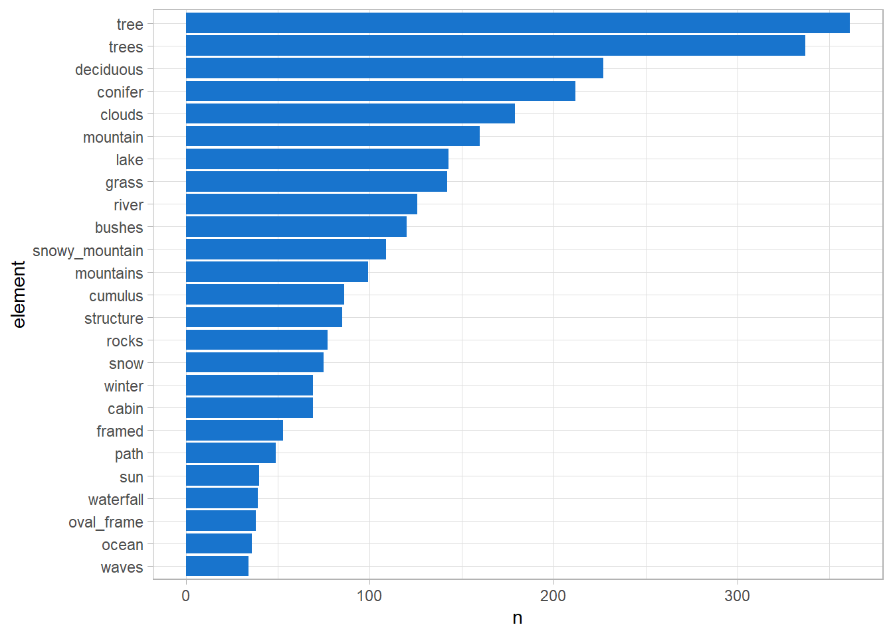
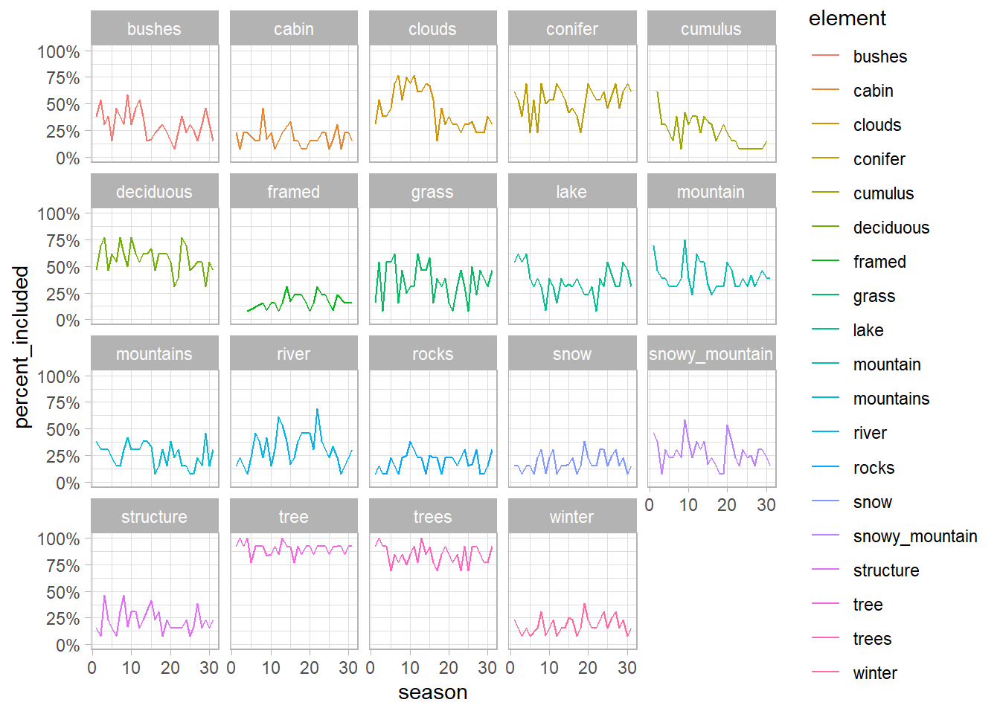

knitr::include_graphics(here::here("recreate.png"))
knitr::include_graphics(here::here("bobross_pic.png"))
#Libraries
library(knitr)
library(tidyverse)
library(dplyr)
library(janitor)##
## Attaching package: 'janitor'## The following objects are masked from 'package:stats':
##
## chisq.test, fisher.testlibrary(here)
library(readr)
theme_set(theme_light())#Import data
bob_ross <- readr::read_csv("https://raw.githubusercontent.com/rfordatascience/tidytuesday/master/data/2019/2019-08-06/bob-ross.csv")## Rows: 403 Columns: 69## -- Column specification --------------------------------------------------------
## Delimiter: ","
## chr (2): EPISODE, TITLE
## dbl (67): APPLE_FRAME, AURORA_BOREALIS, BARN, BEACH, BOAT, BRIDGE, BUILDING,...##
## i Use `spec()` to retrieve the full column specification for this data.
## i Specify the column types or set `show_col_types = FALSE` to quiet this message.glimpse(bob_ross)## Rows: 403
## Columns: 69
## $ EPISODE <chr> "S01E01", "S01E02", "S01E03", "S01E04", "S01E05", "~
## $ TITLE <chr> "\"A WALK IN THE WOODS\"", "\"MT. MCKINLEY\"", "\"E~
## $ APPLE_FRAME <dbl> 0, 0, 0, 0, 0, 0, 0, 0, 0, 0, 0, 0, 0, 0, 0, 0, 0, ~
## $ AURORA_BOREALIS <dbl> 0, 0, 0, 0, 0, 0, 0, 0, 0, 0, 0, 0, 0, 0, 0, 0, 0, ~
## $ BARN <dbl> 0, 0, 0, 0, 0, 0, 0, 0, 0, 0, 0, 0, 0, 0, 0, 0, 0, ~
## $ BEACH <dbl> 0, 0, 0, 0, 0, 0, 0, 0, 1, 0, 0, 0, 0, 0, 0, 0, 0, ~
## $ BOAT <dbl> 0, 0, 0, 0, 0, 0, 0, 0, 0, 0, 0, 0, 0, 0, 0, 0, 0, ~
## $ BRIDGE <dbl> 0, 0, 0, 0, 0, 0, 0, 0, 0, 0, 0, 0, 0, 0, 0, 0, 0, ~
## $ BUILDING <dbl> 0, 0, 0, 0, 0, 0, 0, 0, 0, 0, 0, 0, 0, 0, 0, 0, 0, ~
## $ BUSHES <dbl> 1, 0, 0, 1, 0, 0, 0, 1, 0, 1, 0, 0, 1, 1, 0, 0, 1, ~
## $ CABIN <dbl> 0, 1, 1, 0, 0, 1, 0, 0, 0, 0, 0, 0, 0, 0, 0, 0, 1, ~
## $ CACTUS <dbl> 0, 0, 0, 0, 0, 0, 0, 0, 0, 0, 0, 0, 0, 0, 0, 0, 0, ~
## $ CIRCLE_FRAME <dbl> 0, 0, 0, 0, 0, 0, 0, 0, 0, 0, 0, 0, 0, 0, 0, 0, 0, ~
## $ CIRRUS <dbl> 0, 0, 0, 0, 0, 0, 0, 0, 0, 0, 0, 1, 0, 0, 0, 0, 0, ~
## $ CLIFF <dbl> 0, 0, 0, 0, 0, 0, 0, 0, 0, 0, 0, 0, 0, 0, 0, 0, 0, ~
## $ CLOUDS <dbl> 0, 1, 0, 1, 0, 0, 0, 0, 1, 0, 0, 1, 0, 0, 0, 1, 1, ~
## $ CONIFER <dbl> 0, 1, 1, 1, 0, 1, 0, 1, 0, 1, 0, 1, 1, 1, 1, 0, 1, ~
## $ CUMULUS <dbl> 0, 0, 0, 0, 0, 0, 0, 0, 0, 0, 0, 0, 0, 1, 0, 1, 1, ~
## $ DECIDUOUS <dbl> 1, 0, 0, 0, 1, 0, 1, 0, 0, 1, 1, 0, 1, 1, 0, 1, 1, ~
## $ DIANE_ANDRE <dbl> 0, 0, 0, 0, 0, 0, 0, 0, 0, 0, 0, 0, 0, 0, 0, 0, 0, ~
## $ DOCK <dbl> 0, 0, 0, 0, 0, 0, 0, 0, 0, 0, 0, 0, 0, 0, 0, 0, 0, ~
## $ DOUBLE_OVAL_FRAME <dbl> 0, 0, 0, 0, 0, 0, 0, 0, 0, 0, 0, 0, 0, 0, 0, 0, 0, ~
## $ FARM <dbl> 0, 0, 0, 0, 0, 0, 0, 0, 0, 0, 0, 0, 0, 0, 0, 0, 0, ~
## $ FENCE <dbl> 0, 0, 1, 0, 0, 0, 0, 0, 1, 0, 0, 0, 0, 0, 0, 0, 0, ~
## $ FIRE <dbl> 0, 0, 0, 0, 0, 0, 0, 0, 0, 0, 0, 0, 0, 0, 0, 0, 0, ~
## $ FLORIDA_FRAME <dbl> 0, 0, 0, 0, 0, 0, 0, 0, 0, 0, 0, 0, 0, 0, 0, 0, 0, ~
## $ FLOWERS <dbl> 0, 0, 0, 0, 0, 0, 0, 0, 0, 0, 0, 0, 0, 0, 0, 0, 0, ~
## $ FOG <dbl> 0, 0, 0, 0, 0, 0, 0, 0, 0, 0, 0, 0, 0, 0, 0, 0, 0, ~
## $ FRAMED <dbl> 0, 0, 0, 0, 0, 0, 0, 0, 0, 0, 0, 0, 0, 0, 0, 0, 0, ~
## $ GRASS <dbl> 1, 0, 0, 0, 0, 0, 0, 0, 0, 0, 0, 0, 1, 1, 0, 0, 0, ~
## $ GUEST <dbl> 0, 0, 0, 0, 0, 0, 0, 0, 0, 0, 0, 0, 0, 0, 0, 0, 0, ~
## $ HALF_CIRCLE_FRAME <dbl> 0, 0, 0, 0, 0, 0, 0, 0, 0, 0, 0, 0, 0, 0, 0, 0, 0, ~
## $ HALF_OVAL_FRAME <dbl> 0, 0, 0, 0, 0, 0, 0, 0, 0, 0, 0, 0, 0, 0, 0, 0, 0, ~
## $ HILLS <dbl> 0, 0, 0, 0, 0, 0, 0, 0, 0, 0, 0, 0, 0, 0, 0, 0, 0, ~
## $ LAKE <dbl> 0, 0, 0, 1, 0, 1, 1, 1, 0, 1, 1, 1, 0, 1, 1, 0, 1, ~
## $ LAKES <dbl> 0, 0, 0, 0, 0, 0, 0, 0, 0, 0, 0, 0, 0, 0, 0, 0, 0, ~
## $ LIGHTHOUSE <dbl> 0, 0, 0, 0, 0, 0, 0, 0, 0, 0, 0, 0, 0, 0, 0, 0, 0, ~
## $ MILL <dbl> 0, 0, 0, 0, 0, 0, 0, 0, 0, 0, 0, 0, 0, 0, 0, 0, 0, ~
## $ MOON <dbl> 0, 0, 0, 0, 0, 1, 0, 0, 0, 0, 0, 0, 0, 0, 0, 0, 0, ~
## $ MOUNTAIN <dbl> 0, 1, 1, 1, 0, 1, 1, 1, 0, 1, 0, 1, 1, 1, 0, 0, 1, ~
## $ MOUNTAINS <dbl> 0, 0, 1, 0, 0, 1, 1, 1, 0, 0, 0, 1, 0, 0, 0, 0, 1, ~
## $ NIGHT <dbl> 0, 0, 0, 0, 0, 1, 0, 0, 0, 0, 0, 0, 0, 0, 0, 0, 0, ~
## $ OCEAN <dbl> 0, 0, 0, 0, 0, 0, 0, 0, 1, 0, 0, 0, 0, 0, 0, 1, 0, ~
## $ OVAL_FRAME <dbl> 0, 0, 0, 0, 0, 0, 0, 0, 0, 0, 0, 0, 0, 0, 0, 0, 0, ~
## $ PALM_TREES <dbl> 0, 0, 0, 0, 0, 0, 0, 0, 0, 0, 0, 0, 0, 0, 0, 0, 0, ~
## $ PATH <dbl> 0, 0, 0, 0, 0, 0, 0, 0, 0, 0, 0, 0, 0, 0, 0, 0, 0, ~
## $ PERSON <dbl> 0, 0, 0, 0, 0, 0, 0, 0, 0, 0, 0, 0, 0, 0, 0, 0, 0, ~
## $ PORTRAIT <dbl> 0, 0, 0, 0, 0, 0, 0, 0, 0, 0, 0, 0, 0, 0, 0, 0, 0, ~
## $ RECTANGLE_3D_FRAME <dbl> 0, 0, 0, 0, 0, 0, 0, 0, 0, 0, 0, 0, 0, 0, 0, 0, 0, ~
## $ RECTANGULAR_FRAME <dbl> 0, 0, 0, 0, 0, 0, 0, 0, 0, 0, 0, 0, 0, 0, 0, 0, 0, ~
## $ RIVER <dbl> 1, 0, 0, 0, 1, 0, 0, 0, 0, 0, 0, 0, 0, 0, 0, 0, 0, ~
## $ ROCKS <dbl> 0, 0, 0, 0, 1, 0, 0, 0, 0, 0, 0, 0, 0, 0, 0, 0, 0, ~
## $ SEASHELL_FRAME <dbl> 0, 0, 0, 0, 0, 0, 0, 0, 0, 0, 0, 0, 0, 0, 0, 0, 0, ~
## $ SNOW <dbl> 0, 1, 0, 0, 0, 1, 0, 0, 0, 0, 0, 0, 0, 0, 1, 0, 1, ~
## $ SNOWY_MOUNTAIN <dbl> 0, 1, 0, 1, 0, 1, 1, 0, 0, 0, 0, 1, 1, 1, 0, 0, 1, ~
## $ SPLIT_FRAME <dbl> 0, 0, 0, 0, 0, 0, 0, 0, 0, 0, 0, 0, 0, 0, 0, 0, 0, ~
## $ STEVE_ROSS <dbl> 0, 0, 0, 0, 0, 0, 0, 0, 0, 0, 0, 0, 0, 0, 0, 0, 0, ~
## $ STRUCTURE <dbl> 0, 0, 1, 0, 0, 1, 0, 0, 0, 0, 0, 0, 0, 0, 0, 0, 1, ~
## $ SUN <dbl> 0, 0, 1, 0, 0, 0, 0, 0, 0, 0, 0, 0, 0, 0, 1, 1, 0, ~
## $ TOMB_FRAME <dbl> 0, 0, 0, 0, 0, 0, 0, 0, 0, 0, 0, 0, 0, 0, 0, 0, 0, ~
## $ TREE <dbl> 1, 1, 1, 1, 1, 1, 1, 1, 0, 1, 1, 1, 1, 1, 1, 1, 1, ~
## $ TREES <dbl> 1, 1, 1, 1, 1, 1, 1, 1, 0, 1, 1, 1, 1, 1, 1, 1, 1, ~
## $ TRIPLE_FRAME <dbl> 0, 0, 0, 0, 0, 0, 0, 0, 0, 0, 0, 0, 0, 0, 0, 0, 0, ~
## $ WATERFALL <dbl> 0, 0, 0, 0, 0, 0, 0, 0, 0, 0, 0, 0, 0, 0, 0, 0, 0, ~
## $ WAVES <dbl> 0, 0, 0, 0, 0, 0, 0, 0, 0, 0, 0, 0, 0, 0, 0, 1, 0, ~
## $ WINDMILL <dbl> 0, 0, 0, 0, 0, 0, 0, 0, 0, 0, 0, 0, 0, 0, 0, 0, 0, ~
## $ WINDOW_FRAME <dbl> 0, 0, 0, 0, 0, 0, 0, 0, 0, 0, 0, 0, 0, 0, 0, 0, 0, ~
## $ WINTER <dbl> 0, 1, 1, 0, 0, 1, 0, 0, 0, 0, 0, 0, 0, 0, 0, 0, 0, ~
## $ WOOD_FRAMED <dbl> 0, 0, 0, 0, 0, 0, 0, 0, 0, 0, 0, 0, 0, 0, 0, 0, 0, ~#Cleaning data
bob_ross_gathered <- bob_ross %>%
janitor::clean_names() %>%
gather(element, present, -episode, -title) %>%
filter(present == 1) %>%
select(-present) %>%
extract(episode, c("season", "episode_number"), "S(.*)E(.*)", convert = TRUE, remove = FALSE) %>%
arrange(season, episode_number)#recheck
glimpse(bob_ross_gathered)## Rows: 3,221
## Columns: 5
## $ episode <chr> "S01E01", "S01E01", "S01E01", "S01E01", "S01E01", "S01E~
## $ season <int> 1, 1, 1, 1, 1, 1, 1, 1, 1, 1, 1, 1, 1, 1, 1, 1, 1, 1, 1~
## $ episode_number <int> 1, 1, 1, 1, 1, 1, 2, 2, 2, 2, 2, 2, 2, 2, 2, 3, 3, 3, 3~
## $ title <chr> "\"A WALK IN THE WOODS\"", "\"A WALK IN THE WOODS\"", "~
## $ element <chr> "bushes", "deciduous", "grass", "river", "tree", "trees~#Plottting
bob_ross_gathered %>%
count(element, sort = TRUE) %>%
head(25) %>%
mutate(element = fct_reorder(element, n)) %>%
ggplot(aes(element, n , label = scales::percent(n))) +
geom_col(fill = "dodgerblue3") +
coord_flip()
#Most “crowded” paintings
bob_ross_gathered %>%
add_count(title) %>%
arrange(desc(n))## # A tibble: 3,221 x 6
## episode season episode_number title element n
## <chr> <int> <int> <chr> <chr> <int>
## 1 S08E02 8 2 "\"LAKESIDE CABIN\"" bushes 22
## 2 S08E02 8 2 "\"LAKESIDE CABIN\"" cabin 22
## 3 S08E02 8 2 "\"LAKESIDE CABIN\"" circle_frame 22
## 4 S08E02 8 2 "\"LAKESIDE CABIN\"" clouds 22
## 5 S08E02 8 2 "\"LAKESIDE CABIN\"" deciduous 22
## 6 S08E02 8 2 "\"LAKESIDE CABIN\"" framed 22
## 7 S08E02 8 2 "\"LAKESIDE CABIN\"" grass 22
## 8 S08E02 8 2 "\"LAKESIDE CABIN\"" lake 22
## 9 S08E02 8 2 "\"LAKESIDE CABIN\"" structure 22
## 10 S08E02 8 2 "\"LAKESIDE CABIN\"" tree 22
## # ... with 3,211 more rows#Change in the paitings overtime
by_season_element <- bob_ross_gathered %>%
filter(!element %in% c("Tree", "Trees")) %>%
group_by(season) %>%
mutate(number_episodes = n_distinct(episode)) %>%
count(season, element, number_episodes, sort = TRUE) %>%
mutate(percent_included = n / number_episodes) %>%
group_by(element) %>%
mutate(element_total = sum(n)) %>%
ungroup()
by_season_element %>%
filter(element_total >= 50) %>%
ggplot(aes(season, percent_included, color = element)) +
geom_line() +
scale_y_continuous(labels = scales::percent_format()) +
expand_limits(y = 0) +
facet_wrap(~ element)